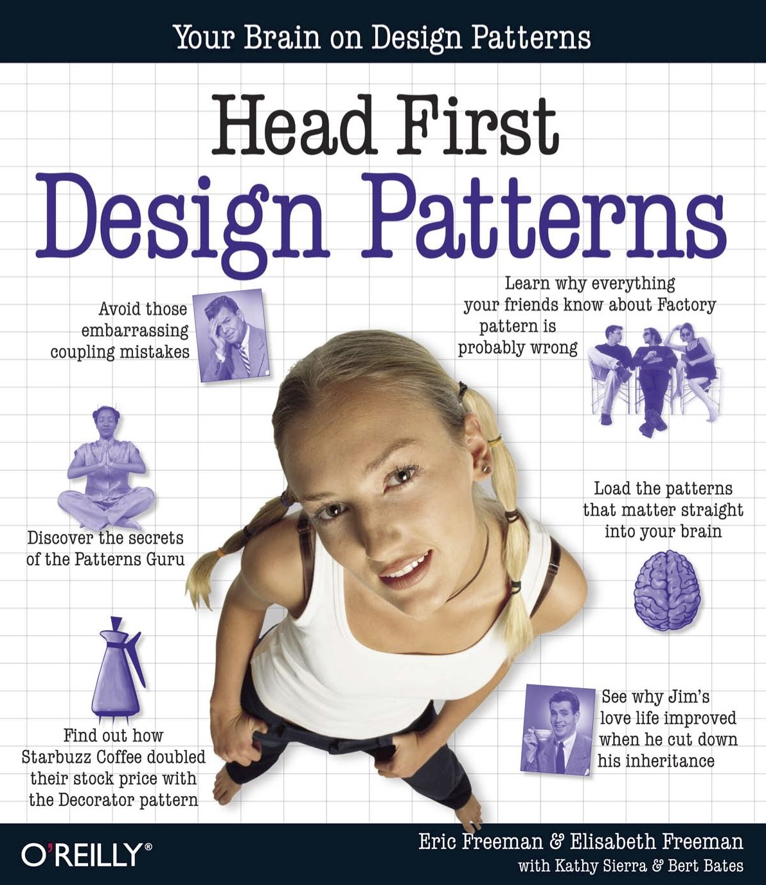

参考资料
转发一个设计分析
- 一个游戏玩家对一个游戏的事件驱动设计的分析
设计模式
- Erich Gamma, Richard Helm, Ralph Johnson, John Vlissides. Design Patterns: Elements of Reusable Object-oriented Software. Addison Wesley Longman. 1995
- Eric Freeman, Elisabeth Robson, Bert Bates, Kathy Sierra. Head First Design Patterns. O’Reilly Media. Oct 2004 
软件体系结构风格, 数据库
- What is the difference between a process and a thread
- Parallel programming model
- Architectural pattern
- List of software architecture styles and patterns
- Object database
- NoSQL database
UML工具
- UML的版本历史，每个版本的特点，各种建模示例均可在此找到，具有重要的参考价值
- UML 绘图工具大全，其中有一些较为小巧的如 yED, UMLet 等可做漂亮的工作
- 目前UML工具中比较流行的是在线画图工具，如开源的draw.io, draw.io 也提供离线版本, 在Chrome浏览器中运行
- 一些建模工具使用文本(如Markdown格式)描述图形，然后将文本编译生成图形。典型的是 PlantUML, yUML, Mermaid，等
- SDL(Specification and Description Language)是一个广泛应用于电信领域，可对分布式系统和反应式系统进行精确建模的语言
消息, 消息中间件, 并发编程
- Concurrency at Wikipedia
- Messaging Pattern at Wikipedia
- AllanKay on Messaging , AlanKay的一封信，他表示OO的要点不在Object, 而在于Message -- The big idea is "messaging" - that is what the kernal of Smalltalk/Squeak is all about (and it's something that was never quite completed in our Xerox PARC phase).
- 这篇博文介绍了Rails设计中的对象和消息, 也引用了AlanKay关于Message的观点 -- To Kay, what's important is the relationships between objects, and that the real abstraction is in the messages, not the objects.
- Erlang 是一个支持Actor模型的编程语言. Wikipedia上也有关于Erlang的介绍: Concurrency and distribution orientation of Erlang at Wikipedia
- Akka是一个开源的并发编程框架, 支持Actor模型
- 流行消息框架或消息中间件: ActiveMQ, RabbitMQ, ØMQ, Kafka
继承 vs 组装
- Interface
- Inheritance(OOP)
- Subtyping
- Polymorphism
- Duck Typing
- Mixin
- Liskov substitution principle
- Composition over inheritance
- OOSC-2: HOW TO FIND THE CLASSES, taken from chapter 22 of the book Object-Oriented Software Construction, second edition, Prentice Hall, 1997
- OBJECT-ORIENTED ANALYSIS, KEY CONCEPTS, BENEFITS AND CRITICISMS, by Prof. Vicki Sauter, November 29, 1999
- Interface vs Base class, a discussion at stackoverflow
- Choosing Between Classes and Interfaces, MSDN的技术文档，建议多用 Abstract Class: While both abstract classes and interfaces support separating contract from implementation, interfaces cannot specify new members in later versions while abstract classes can add members as needed to support additional functionality.
需求分析
- Requirement and Requirement Engineering
- Requirement elicitation
- Requirement analysis
- Systems modeling
- Verification and validation
- Wikipedia Use case, Scenario (computing)
- 谭云杰, 大象：Thinking in UML(第2版), 中国水利水电出版社, 2012. 第8-10章
软件开发技术
- David Parnas 关于modular design中模块应该 high cohesion 和 loose coupling 的思想, 以及 Information Hiding, 见于论文 On the Criteria To Be Used in Decomposing Systems into Modules
- Frederick P. Brooks的No Silver Bullet, 后来成为 The Mythical Man-Month的一个章节
- Eric S. Raymond 的经典著作 The Art of Unix Programming，中文版 Unix编程艺术
- Toronto University CS 课程 Software Architecture & Design 的 Structured Design
关于面向对象
- Wikipedia Progrmming Paradigm, various programming paradigms overviews graph
- Wikipedia Object-oriented programming
- Wikipedia Object--orientation
- 维特根斯坦的逻辑哲学论，没有证据表明OO和逻辑哲学论有直接关联，但这本书的思想和风格有可能对你看待程序设计和软件开发有所启发
{kind=link}
其他声音
- Lawrence krubner 批判 OOP 的一篇长文 Object Oriented Programming is an expensive disaster which must end（真的非常长，但值得仔细阅读）
- Arguments Against Oop , Summary of Criticisms Against OO
- Oop Arguments Debates And Discussion